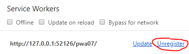

PWA de Exemplo 07
Neste exemplo iremos explorar o funcionamento dos eventos install e activate dos Service Workers.
O evento install acontece em algum momento depois da execução do método navigator.serviceWorker.register(). Neste momento, o Service Worker tem oportunidade de preparar todos os arquivos e configurações necessárias para que ele funcione corretamente. Isso pode incluir a criação de um cache para armazenar os arquivos necessários para fazer o aplicativo funcionar offline.
Como já visto em exemplos anteriores, uma vez instalado, o Service Worker não começa a valer instantaneamente. O mesmo ocorre quando ele é alterado, mas de forma ligeiramente diferente...


Por exemplo, as imagens acima apontam para arquivos que propositalmente não existem. Logo, na primeira vez que a página é aberta veremos dois erros, apesar do Service Worker tratar arquivos com extensão jpg. Isso ocorre porque, como vimos anteriormente, o Service Worker ainda não estava instalado/ativo na primeira vez que a página foi aberta. Mas o significado real dessa frase só pode ser compreendido com outro exemplo, já que alguém pode (erroneamente) pensar "Claro! Na primeira vez, o Service Worker não tratou as imagens acima porque ele só foi registrado no final da página! Eu olhei nas ferramentas de desenvolvedor e vi que o Service Worker estava OK! Se aparecesse outra imagem depois do Service Worker ter sido registrado, ele teria tratado!".
Assim, por que não criar um botão para adicionar imagens dinamicamente 😁?
O que ocorre quando você adiciona novas imagens??? Exatamente! Nada de diferente! Você continua recebendo erros!!! Isso significa que o Service Worker, apesar de aparecer como OK (como na imagem abaixo), não está sendo utilizado para a página atual, por uma questão de coerência.
Se a página começou sem o Service Worker, o navegador deixa que ela continue vivendo sem o Service Worker. Assim que você recarregar a página, ou fechar a aba e abrir de novo, a história muda, e, como o Service Worker já está instalado e ativo, ele será utilizado na página!
Recomento fortemente que você atualize a página agora, para ver as barras pretas e brancas, e fazer a próxima parte do exemplo ter sentido 😁😁😁!
Esse comportamento pode ser alterado utilizando o método clients.claim(), mostrado aqui, e está relacionado com o evento activate. O passo-a-passo abaixo serve para ilustrar isso melhor.
- A página nunca foi visitada.
- A página é visitada pela primeira vez, e o método navigator.serviceWorker.register() é executado.
- O Service Worker é baixado e instalado.
- Ocorre o evento install do Service Worker. Nele, podemos passar uma Promise através do método waitUntil() do evento, para dizer ao navegador que o processo de instalação ainda não acabou (veja o código do Service Worker para mais informações).
- Assim que o processo de instalação termina, o que inclui a Promise passada para o método waitUntil(), ocorre o evento activate. Nele, podemos passar uma Promise através do método waitUntil() do evento, para dizer ao navegador que o processo de ativação ainda não acabou (veja o código do Service Worker para mais informações). Ainda dentro do evento, é possível executar o método clients.claim(), fazendo com que o Service Worker assuma o controle até mesmo das páginas que já estão abertas, e foram abertas sem o Service Worker.
Quer ver isso acontecendo na prática?
- Remova o registro do Service Worker atual. 
-
Edite o arquivo do Service Worker, removendo o comentário da linha
//clients.claim(); - Recarregue a página, e repare que a versão do Service Worker vai ter mudado (no exemplo, a versão antiga era #38).
- As duas imagens iniciais de exemplo voltarão a aparecer como erro, porque no momento do novo carregamento da página não existia um Service Worker instalado/ativo. Porém, clique no botão "Adicionar Imagem" e veja que as novas imagens aparecem como as listras pretas e brancas, porque o Service Worker assumiu a página atual assim que sua ativação foi concluída! É possível saber quais páginas estão sendo servidas pelo Service Worker olhando seus clientes:
Espero que uma coisa tenha ficado clara com os exemplos mostrados até aqui: os Service Workers são entidades à parte das páginas, e não meros scripts referenciados pelas páginas! Eles têm seu próprio ciclo de vida! O método navigator.serviceWorker.register() serve apenas para dizer para o navegador: "Se você ainda não instalou meu Service Worker, faça isso agora!" (mas com educação 😁).
Quer mais uma prova disso?
Vá até lá embaixo, dentro da tag <script>, e comente o trecho navigator.serviceWorker.register("sw.js");. Depois, atualize a página e veja que o navegador continua utilizando o Service Worker! Isso porque, uma vez registrado, o navegador só vai parar de utilizar o Service Worker para as páginas de seu escopo, se você remover o registro do Service Worker.
O código-fonte e as explicações podem ser encontradas no GitHub do projeto: github.com/tech-espm/labs-pwa 😊.